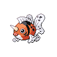

📖 英語版の図鑑説明
Using its horn, it bores holes in riverbed boulders, making nests to prevent its eggs from washing away.
日本語訳
角を使って川底の岩に穴を掘り、卵が流されないように巣を作る。
📝 この図鑑文に出てくる英単語
| 英単語 | 意味 | 品詞 | レベル |
|---|---|---|---|
| horn | 角 | 名詞 | 高校 |
| bores | 穴をあける | 動詞 | 大学 |
| holes | 穴(複数形) | 名詞 | 中2 |
| riverbed | 川底 | 名詞 | 大学 |
| boulders | 大きな岩(複数形) | 名詞 | 大学 |
| making | 作っている | 動詞 | 中1 |
| nests | 巣(複数形) | 名詞 | 中3 |
| prevent | 防ぐ | 動詞 | 高校 |
文法ポイント from washing は前置詞のあとに動詞のing形(動名詞)が続く形で、「〜することから」という意味です。
💡 英語名「Seaking」の由来
英語名「Seaking」は、sea（海）、king（王）とseeking（「探す」のもじり）を組み合わせた名前と考えられている。ドイツ語の名前は「Golking」で、Goldfisch（金魚）、king（王）から作られている。
出典 Bulbapedia
✨ アズマオウの豆知識
『金・銀』では、アズマオウが最初から覚えている技に「ちょうおんぱ」が入る予定だったらしい。ところがデータの入力ミスで「しっぽをふる」が重なってしまい、技が2つだけになった。
出典 Bulbapedia
📊 アズマオウの種族値
HP80
こうげき92
ぼうぎょ65
とくこう65
とくぼう80
すばやさ68
合計 450
❓ よくある質問
- アズマオウの英語名は？
- アズマオウの英語名は「Seaking」です。
- アズマオウの英語名「Seaking」の由来は？
- 英語名「Seaking」は、sea（海）、king（王）とseeking（「探す」のもじり）を組み合わせた名前と考えられている。ドイツ語の名前は「Golking」で、Goldfisch（金魚）、king（王）から作られている。
- アズマオウは英語版の図鑑でどう説明されている？
- 「Using its horn, it bores holes in riverbed boulders, making nests to prevent its eggs from washing away.」と書かれています。日本語にすると「角を使って川底の岩に穴を掘り、卵が流されないように巣を作る。」という意味です。
アズマオウは第1世代（カントー地方）のポケモンです。第1世代（カントー地方）の英語名一覧 →